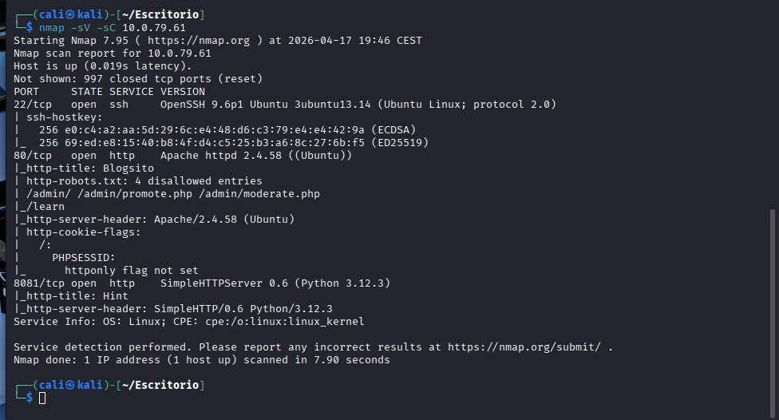
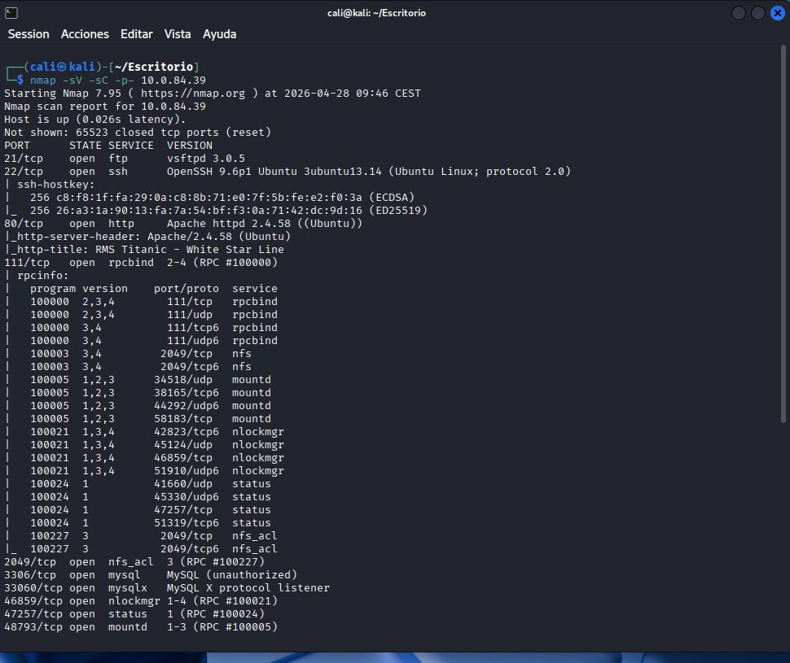
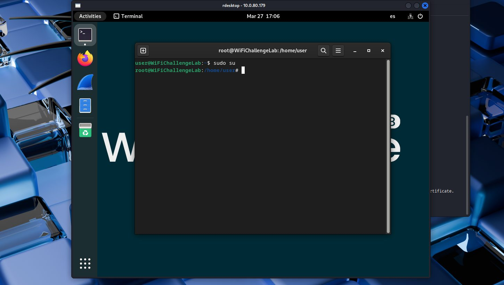

🐶
Web SecuritySnoopy: LFI, exposición de credenciales y capabilities
Cadena de intrusión Linux desde reconocimiento web hasta escalada local mediante una capability peligrosa en Python.
LFINmapSSHLinux
Evidencias inlineRead Writeup →
Laboratorios técnicos convertidos en casos visuales, resumidos y orientados a contratación. Sin documentos externos publicados, sin datos sensibles y con evidencias integradas por fase.
Filtra por categoría, dificultad o tecnología. Cada tarjeta abre una vista individual tipo blog técnico con timeline y capturas reales.
Cadena de intrusión Linux desde reconocimiento web hasta escalada local mediante una capability peligrosa en Python.

Explotación de una aplicación vulnerable a SQL Injection combinando pruebas manuales, sqlmap y reutilización de credenciales.

Compromiso de un Windows Server mediante información sensible expuesta en FTP, validación SMB y ejecución remota con Metasploit.

Cadena web completa: rutas expuestas, análisis de código, XSS almacenado, CSRF, subida de webshell y escalada mediante sudo tar.

Transformación de una LFI en ejecución de comandos mediante envenenamiento de logs y escalada por sudo awk.

Laboratorio de red local para demostrar MITM por envenenamiento ARP y exposición de credenciales en protocolos sin cifrar.

Implementación de un honeypot de baja interacción para registrar conexiones y observar comportamiento de un supuesto intruso.

Auditoría WiFi completa: modo monitor, captura EAPOL, ataque de diccionario, descifrado de tráfico y análisis de sesión HTTP.

Revisión de entradas de arranque, servicios, drivers, tareas programadas y componentes no verificados para reducir superficie de persistencia.